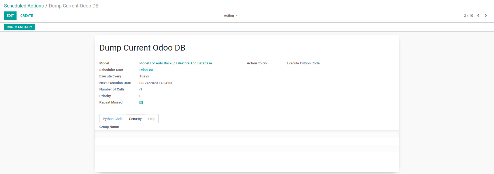
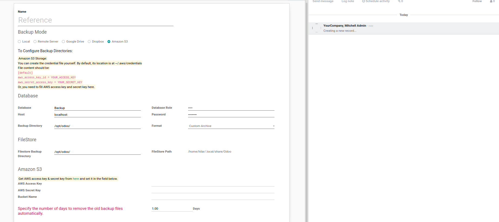
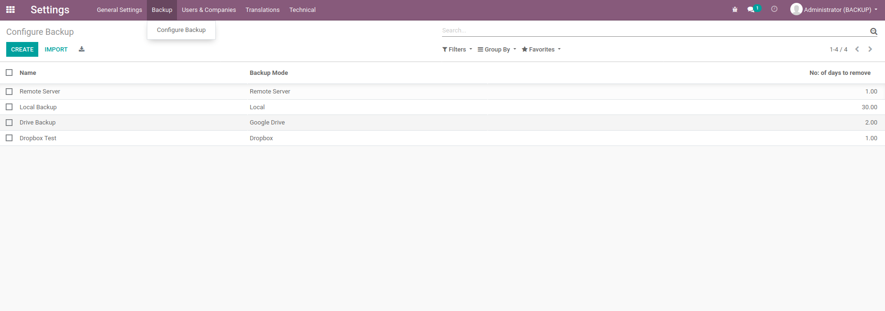
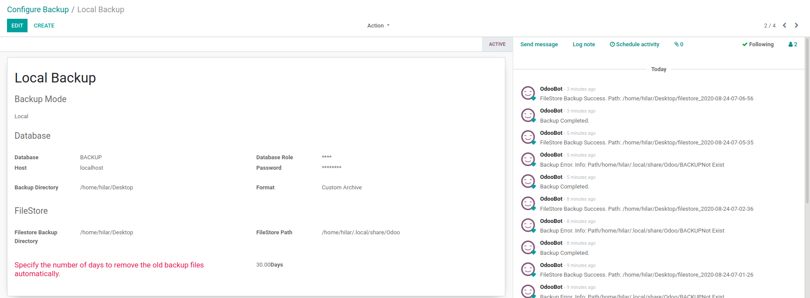
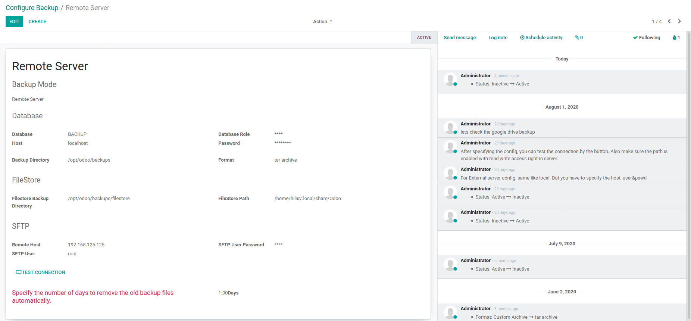
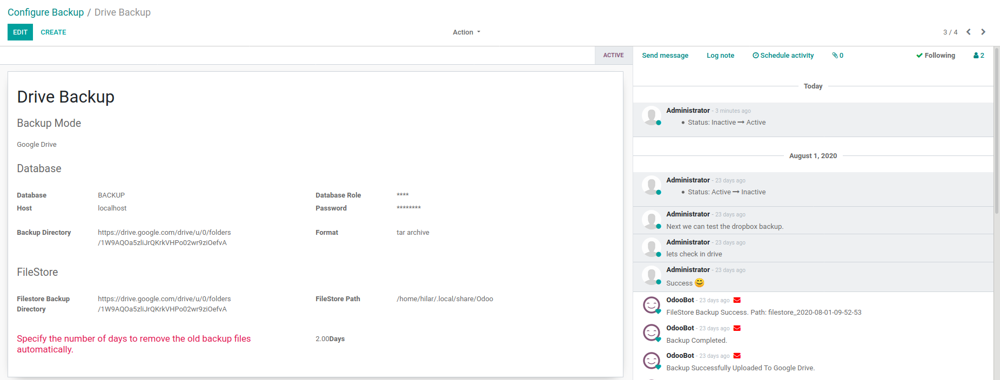
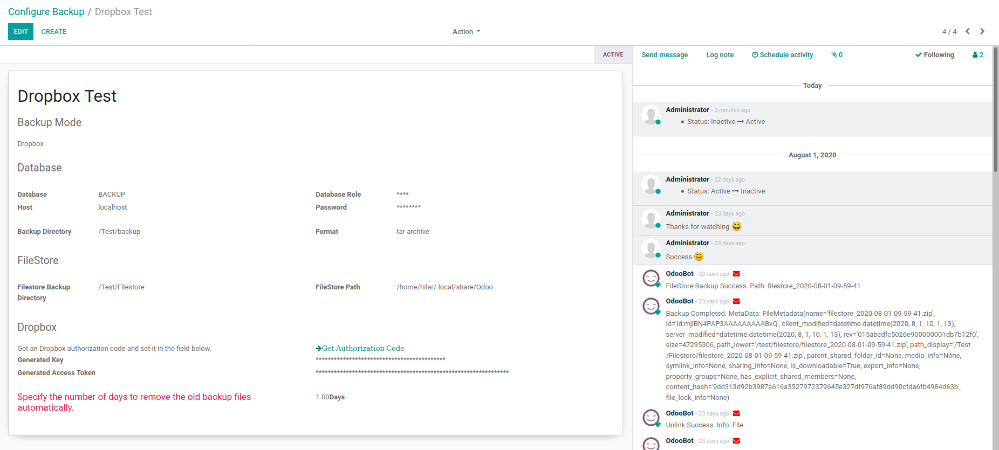
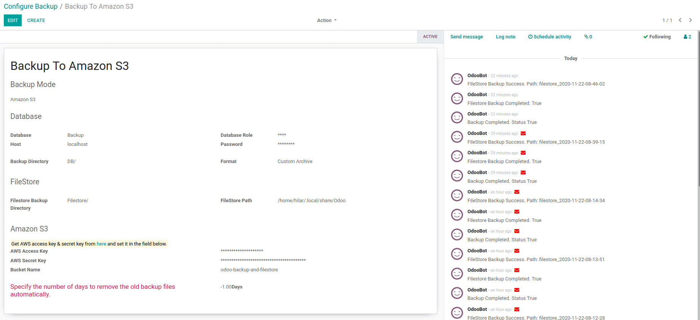

BACKUP
Odoo.sh is not supported due to database access restrictions.
ODOO DATABASES & FILESTORE
Available Odoo Backup DB/Filestore
Modes:
- Local
- Remote Server
- Google Drive
- Dropbox
- Amazon S3
Formats:
- Custom Archive
- Plain Text SQL
- TAR Archive
- ZIP Archive
- Dump Including Filestore
Module For backup ODOO databases and
automating the backup process of ODOO.
- Multiple Backup Modes
- Filestore Backup
- Backup ODOO Databases in
specified path
- Detailed Message Log
- Backup Status Information and History
- User can select the format to dump, either custom
archive, plain text SQL or tar archive
- Archive Backup Process
- Repeat Missed Backup Process
- Backup to Amazon S3
Features
- Dump ODOO Database in specified format
- Zip filestore in a specified location
- The custom archive format is a flexible option for
backing up a database with the intention of restoring it using pg_restore. This format allows for the reordering
of data loading and object definitions, and is compressed by default using gzip.
One advantage of using the custom archive format is that it allows the user to restore single objects from a
backup, rather than having to restore the entire database. This can be useful if you only need to restore a
specific object or if you want to selectively restore certain objects from the backup.
To use the custom archive format, you will need to select it as the format for the database dump when setting up
the backup process. The custom archive will be saved with a .gz extension, such as test.gz.
- Output a plain-text SQL script file (the default).
The plain text format is useful for very small databases with a minimal number of objects but other than that,
it should be avoided.
- The tar archive format is another option for
backing up a database with the intention of restoring it using pg_restore. This format allows for the reordering
and exclusion of database objects at the time of restoration, and it is possible to limit which data is reloaded
during the restore process.
One advantage of using the tar archive format is that it allows for a greater level of control over the
restoration process, as you can choose which objects to include or exclude from the restored database.
To use the tar archive format, you will need to select it as the format for the database dump when setting up
the backup process. The tar archive will be compressed using gzip to reduce the file size.
- Backup Filestore
- Multiple backup modes at sametime
- ODOO Backup to Amazon S3
- ODOO Backup to Google Drive
- ODOO Backup tp Dropbox
- ODOO Backup to remote server
Tech
Odoo Auto Backup Module uses
External
Dependencies
Installation
To install the ODOO and Auto Backup module and
configure backup, you can follow these steps:
Install ODOO: Follow the installation instructions for
your operating system to install ODOO.
Configure backup: Go to the "General Settings" menu in
ODOO and configure the backup settings as desired.
Start the backup process: Once you have configured the
backup settings, the backup process will start according to the schedule you have set. You can view the backup
status and history in the Auto Backup menu.
CHANGELOGS
Date: 07/12/2020
- Performance Improvement
- Session Upload Trace For Dropbox Files > 150
mb
- Full Metadata Track In Message Logs
- Fix Dropbox Tar files upload
- Progress Meter In Logs
Date: 22/11/2020
- Amazon S3 Database Backup
- Amazon S3 Filestore Backup
Date: 25/12/2022
- GDRIVE Client Update: There has been an update to
the GDRIVE client./li>
- New Format Named DUMP: A new format named DUMP has
been added, which allows the user to get a backup with both the filestore and database dump zipped.
- Documentation: The documentation for the backup
configuration views has been improved.
Todos
Author
Hilar
AK
Git
Repository
Hilar AK
Configurations
Cron Job To Enable Automatic Backup

New Record

Records

Backup Modes
Local

Remote

Google Drive

Dropbox

Amazon S3
